3D Printing Eco-Friendly Concrete Containing Under-Utilised and Waste Solids as Aggregates (2021-03)
Gang Bai,
Li Wang,
Guowei Ma,
Jay Sanjayan,
Mingke Bai Journal Article – Cement and Concrete Composites, Vol. 120
Abstract3D concrete printing is an emerging construction technology, and presents an opportunity for utilising materials that are otherwise considered unsuitable for concrete construction. Incorporating underutilised solids and/or waste solids as aggregates is a way of gaining the maximum environmental and economic benefits from the emerging 3D concrete printing technology. In this study, desert sand (small size), river-sediment ceramsite sand (medium size), and recycled concrete (large size) were experimentally investigated for use as aggregates in the 3D printing of concrete. Three mixtures were designed with continuous, open, and interrupted gradations of solids, respectively, based on the theory of particle interference, and aiming to meet the requirements of extrusion-based 3D printing. The influences of the particle grading characteristics on the printability-related early-age behaviours, mechanical properties, and shrinkage resistance have been measured and analysed. The test results demonstrate that the self-supporting skeletal effect formed by the gradated particles reduces the flowability of the mixtures, but the structural build-up/buildability performance is improved (under the premise of the desired printability). The interlayer distribution and skeleton of the gradated aggregate contribute to improving the interfacial interlocking effect and contact bonding between layers; this is visually validated through computed tomography (CT) scanning. Further, the addition of aggregates reduces the proportion of cementitious composites, and therefore effectively mitigates the shrinkage of the cement matrix. The grading characteristics of the underutilised particle resources are crucial for regulating the early-age 3D printability. This article provides feasible solutions based on experimental data for promoting the eco-utilisation of underutilised and waste solids in 3D printing, and these solutions satisfy the minimum strength and durability requirements.Metrics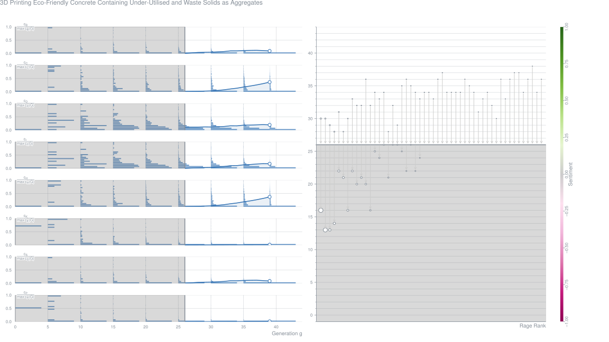
Rheology and Application of Buoyant Foam-Concrete for Digital Fabrication (2021-03)
AbstractIn the fresh state, conventional lightweight foam concrete (LWFC) has low yield stress which challenges shape retention and buildability in digital construction. Several literatures attempt to address the rheological performance of 3D printable lightweight foam concrete (3DP-LWFC) in essence. This research presents a comprehensive rheological characterisation with controlled shear rate tests and flow curve tests over different foam volume fractions and densities of 700, 1000 and 1400 kg/m3. LWFC is appropriately adapted for extrusion-based 3D printing in the experimental program by incorporating a small amount of nanopowder (replacing 2% of cement mass) for increased yield shear stress, and calcium sulfoaluminate cement replacing 10% of cement mass for improved thixotropy in the fresh state. Accordingly, this raises the yield stress to 347–812 Pa for 700–1400 kg/m3 LWFC compared to static yield stress below 100 Pa of conventional LWFC, improves thixotropic performance in terms of the rate of reflocculation (Rthix 0.21–3.15 Pa/s) and rate of structuration (Athix 0.06–1.02 Pa/s), viscosity (2.5–3.4 Pa⋅s), and elastic shear modulus evolution. Foam volume is found to significantly influence the rheological properties. To analyse the constructability, shape retention and buildability are investigated, resulting in up to 15 deposited filament layers to be reached in a buildability test. Lastly, a practical example is presented whereby a façade element is printed with 3DP-LWFC at a wet density less than 1000 kg/m3, yielding a lightweight element with buoyant characteristics that further expands the application potential of 3D concrete printing.Metrics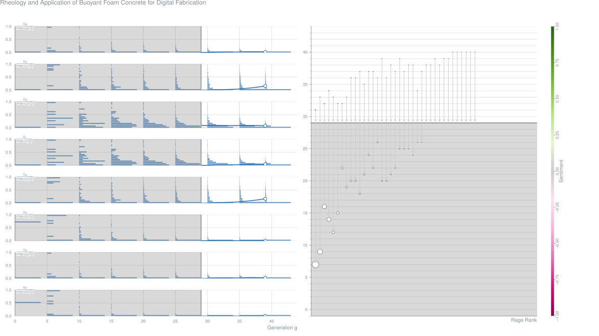
Recasting Concrete: A Case Study in Concrete 3D Printing as an Architectural Pedagogy (2021-03)
Zach Cohen Contribution – Proceedings of the 109th ACSA Annual Meeting
AbstractThis paper discusses a research-based architectural design called “Recasting Concrete,” which was designed to explore the ways in which concrete 3D printing can be utilized as an architectural pedagogy. The paper begins by discussing how current architecture-oriented concrete 3D printing research is fixated on the technology’s application in construction, and how such fixation has prevented architects from exploring other realms in which concrete 3D printing can have impact, for example, education. Recasting Concrete is then situated within digital fabrication-centric pedagogies that have increasingly been introduced in architecture schools worldwide. The studio’s structure is detailed with particular focus on the ways in which students developed experimental concrete 3D printing methodologies. The work of three student research groups is presented. The studio’s work is then put in conversation with contemporary affordance theory in order to illuminate some of the students’ conceptual learnings. Finally, the paper discusses a novel architectural design approach that students learned through their investigations into concrete 3D printing.
Flexural Properties of 3D Printed Fiber-Reinforced Concrete with Recycled Sand (2021-03)
AbstractThe flexural properties of 3D printed concrete specimens with recycled sand reinforced by polyethylene (PE) fibres were investigated through four-point bending tests in this research. The use of recycled sand reduced the flexural stiffness and strength of 3D printed specimens loaded in various directions. From curing ages of 7 d to 14 d, the flexural strength and fracture energy of the specimens increased significantly, while the improvements from 14 d to 28 d were relatively limited. By adding PE fibres into the mix, the negative impact of adding recycled sand can be compensated, and the flexural strength of the 3D printed specimen can be obviously improved. Scanning electron microscopy results showed that the loose old cement paste attached to the recycled sand resulted in the higher porosity of the 3D printed specimens with recycled sand compared to that with only natural sand. The mechanical properties of 3D printed concrete specimens can be effectively improved by the strong interfacial bonds between the fibres and the matrix and the high tensile strength of the fibres. In practical applications, if the deformation and stiffness requirements are not strict, the replacement ratio of recycled sand can be increased if an appropriate fibre content is included.Metrics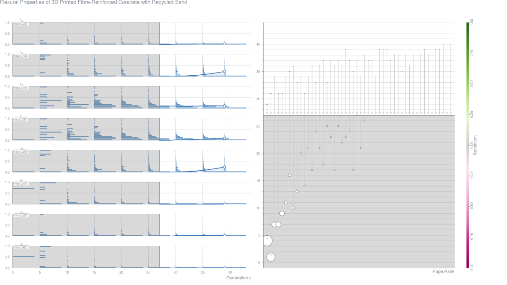
Qualification of 3D Printed Mortar with Electrical Conductivity Measurements (2021-03)
AbstractAdditive manufacturing (AM) or 3-D printing of concrete allows for construction of arbitrary shape structures without a mold. Since reproducibility of 3-D printed concrete is lower than that of conventional fabrication, each 3-D printed structure should be monitored for proper curing. Conventional qualification of concrete is based on several tests, including destructive compressive strength measurements. Because a structure is 3-D printed layer-by-layer, the surfaces of AM concrete structures have significant surface roughness. This limits the applicability of conventional nondestructive testing methods. We investigated qualification of 3-D printed mortar by monitoring curing with nondestructive electrical conductivity measurements. Bulk resistance of concrete was extracted from electrochemical impedance spectroscopy (EIS) measurements made using custom flexible self-adhesive electrodes, which contour to rough surfaces. We show that bulk resistivity of concrete increases linearly with time. This allows for developing a calibration curve for compressive strength lookup from nondestructive electrical conductivity measurements. Conductivity measurements also allow for estimation of formation factor, which is an indicator of mortar permeability.Metrics
Non-Destructive Testing to Characterize Inter-Layer Bonds of Idealized Concrete Additive Manufacturing Products (2021-03)
AbstractWe examine non-destructive testing (NDT) techniques that characterize the interlayer bond quality of idealized 3-D printed concrete, simulating a layup bond, in-situ. An experimental study evaluates four NDT methods (x-ray radiography, ultrasonic pulse velocity (UPV), vibration resonance, and multi-element array ultrasonics) to idealized, layered concrete specimens that simulate layers of a 3-D printed structure. The interlayer bond strengths of the specimens were measured directly using split-prism load testing. X-ray radiography and multi-element array ultrasonic test data demonstrate best correlation with measured interlayer bond strengths. We used multi-element array ultrasonic test data to classify bond interface quality into well bonded, weakly bonded, and debonded cases.
Concept of Using 3D Printing for Production of Concrete-Plastic Columns with Unconventional Cross-Sections (2021-03)
AbstractA concept of concrete-plastic columns was presented in the paper. As a proof of concept, a research program was conducted. Seven different cross-sections of columns formwork were 3D printed using plastic. The cross-sections represented three types of columns' shapes: most common, rare, and impossible to be realized using traditional formworks (based on fractals). Prepared plastic formworks were filled with cement mortar playing the role of ordinary concrete. After 28 days of curing, the load-strain characteristics of all the concrete columns were tested. Achieved results were discussed. It was proven that concrete-plastic columns were characterized by quasi-plastic behavior while being ultimately destroyed. Columns with fractal-based cross-sections sustained the largest strains while maintaining a significant part of the maximum load. The achieved results proved that it is possible to completely omit traditional steel rebar-stirrup reinforcement. The future direction of needed research should cover larger columns and other concrete-plastic elements. Using fiber-reinforced concrete for the creation of concrete-plastic elements should be also tested.Metrics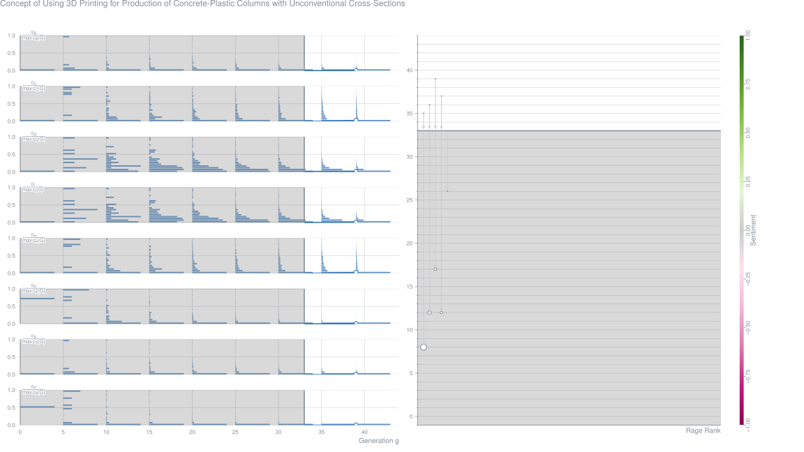
Printability Characterization of Graphene-Reinforced Cementitious Composites (2021-03)
Ugur Kilic,
Zhangfan Jiang,
Ji Ma,
Osman Ozbulut Contribution – Behavior and Mechanics of Multifunctional Materials XV
AbstractThe cement-based additive manufacturing, commonly known as 3D concrete printing, facilitates the use of advanced cementitious materials in construction as this construction technique minimizes waste and enables the optimal placement of the material. 3D printable cementitious mixtures should have specific consistency for successful manufacturing. In particular, they should be extruded smoothly during the printing process while maintain their shape after deposition, both of which are closely related to the rheological properties of cementitious mixture. The use of graphene in cementitious composites has been widely explored in recent years and it was shown that graphene can improve the mechanical properties and durability of cementitious composites. However, the rheological properties and printability characteristics of graphene-reinforced cementitious materials still remain underexplored.
This study investigates the effects of graphene nanoplatelets (GNPs) on rheological and printability characteristics of GNPreinforced cementitious composites. GNPs are added into cementitious mixtures, designed for 3D concrete printing applications, at concentration of 0%, 0.05%, 0.10%, 0.15%, 0.20%, and 0.25% by weight of cement. GNPs are first dispersed into water through the help of ultrasonic treatment and a polycarboxylate-based superplasticizer. The dispersion quality of GNPs is assessed through UV-vis absorption spectroscopy, optical microscopy, and Raman spectroscopy. Then, the rheological properties of GNP-reinforced mortar composites are studied using a shear rheometer via stress-growth tests, shear rate ramp up-down tests, and structural recovery tests.
Reuse of 3D Additive Manufacturing Concrete Scrap in Construction (2021-03)
AbstractThe paper studies the possibility of reusing fine concrete scrap of 3D additive production obtained by grinding fractions of various sizes. The ability to hydrate hardening depended on the size of the crushed fractions of concrete scrap. The greatest strength and ability to hydration hardening was shown by the pulverized fraction, which includes the largest number of fine particles of the cement matrix of concrete with the maximum content of non-hydrated particles of alite and belite. Then the strength is followed by samples ofcement stone obtained by grinding the largest fractions (2.5–5 and 1.25–2.5 mm), in which the content of quartz increases and the content of alite and belite decreases. The minimum compressive strength was shown by samples ofcement stone obtained by grinding fractions (0.16–0.315, 0.315–0.63 and 0.63–1.25 mm), in which quartz prevails and traces of alite and belite are observed. The strength of solidified samples is mainly due to coagulation bonds,which significantly weakenwhenwet. Thewater resistance of cement stone samples varies depending on the hydration capacity of the powdered material fractions. It is shown that the use of crushed concrete scrap as a binder requires additional measures to increase the strength and water resistance.
Computational Assessment of Thermal Performance of 3D Printed Concrete Wall Structures with Cavities (2021-03)
AbstractThis paper investigates the thermal performance of two candidate 3D printed cement-based façade construction materials, i.e. lightweight foam concrete and high-performance concrete, distinguished by density (1400 versus 2100 kg/m3) and thermal conductivity (0.37 versus 1.1 W/mK). Strategies toward the thermal improvement of 3D concrete printed façade element cavity arrangements are presented and demonstrated computationally. Four cases of a 3D printed lightweight foam concrete element with cavities, including conduction and/or radiation and/or convection, are analysed numerically and compared. For the element considered here, a 6.6% lower internal temperature is calculated when cavity radiation and convection are not considered. Neglecting cavity radiation and to a lesser extent cavity convection may significantly under-estimate heat transfer through a 3D concrete printed walling system. Investigation of the number and size of cavities in the lightweight foam concrete element reveals that a solid lightweight foam concrete wall performs better thermally than a 3D printed lightweight foam wall section with large, wide cavities for economic material use, however, the introduction of reduced cavity widths leads to improved thermal insulation. A lightweight foam concrete wall section with four cavities (of 20 mm in width) has a better thermal performance than a solid lightweight foam wall with the same outer wall section dimensions. More cavities of smaller width further improve the thermal performance and an overall void to footprint ratio exceeding 50% is shown to yield better thermal performance. A comparison between the thermal performance of lightweight foam concrete and fibre reinforced high-performance concrete as solid and 3D printed cavity walls is also carried out. The inclusion of cavities in the high-performance concrete wall, with higher thermal conductivity, improves its thermal performance in summer (by nearly 1 °C) whilst the inclusion of cavities in the lightweight foam concrete wall, with lower thermal conductivity, worsens its thermal performance (by nearly 1 °C). The thermal performance, and thus choice of wall geometry, is found to be material dependent. The finite element computational strategy is validated by reasonably accurate simulation of published heat flow experimental results, incorporating potentially dominating cavity radiation and convection. Furthermore, an analytical thermal resistance model is presented, and demonstrated to capture the heat transfer in reasonable agreement with a detailed, but complex finite element computational approach.Metrics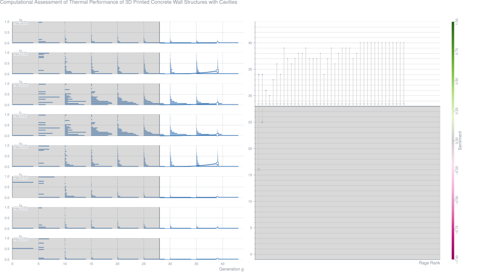
Influence of Fiber-Alignment on Pseudoductility and Micro-Cracking in a Cementitious Carbon-Fiber Composite Material (2021-03)
AbstractThis research examines the effect of fiber alignment on the performance of an exceptionally tough 3D-printable short carbon fiber reinforced cementitious composite material, the flexural strength of which can exceed 100 N/mm2. The material shows pseudoductility caused by strain-hardening and microcracking. An extrusion-based manufacturing process allows accurate control over the spatial alignment of the fibers’ orientation, since extrusion through a tight nozzle leads to nearly unidirectional alignment of the fibers with respect to the directional movement of the nozzle. Specimens were investigated using mechanical tests (flexural and tensile load), augmented by nondestructive methods such as X-ray 3D computed tomography and acoustic emission analysis to gain insight into the microstructure. Additionally, digital image correlation is used to visualize the microcracking process. X-ray CT confirms that about 70% of fibers show less than 10 deviation from the extrusion direction. Systematic variations of the fiber alignment with respect to the direction of tensile load show that carbon fibers enhance the flexural strength of the test specimens as long as their alignment angle does not deviate by more than 20 from the direction of the acting tensile stress. Acoustic emission analysis is capable of evaluating the spatiotemporal degradation behavior during loading and shows consistent results with the microstructural damage observed in CT scans. The strong connection of fiber alignment and flexural strength ties into a change from ductile to brittle failure caused by degradation on a microstructural level, as seen by complementary results acquired from the aforementioned methods of investigation.
A Systematic Review and Analysis of the Viability of 3D Printed Construction in Remote Environments (2021-03)
Steven Schuldt,
Jeneé Jagoda,
Andrew Hoisington,
Justin Delorit Journal Article – Automation in Construction, Vol. 125
Abstract3D-printed construction is an additive, layer-by-layer construction method with the potential to reduce material consumption, optimize design, decrease construction time, lower labor requirements, minimize logistical demand, improve sustainability, and reduce costs as compared to conventional construction. This paper presents the results of a systematic review of 4491 publications spanning from 1998 through 2019. The review presents the viability of 3D-printed construction as a replacement for conventional construction methods, specifically in remote, isolated, or expeditionary environments, where conventional construction capability may be limited. The paper includes an analysis and characterization of the existing body of 3D-printed construction literature before evaluating seven viability factors of the method: materials, structural design, process efficiency, logistics, labor, environmental impact, and cost. In addition, the paper highlights three case studies of 3D-printed construction in remote, isolated, and expeditionary environments. The paper concludes by suggesting areas of future research to ensure the viability of this technology, such as printing full-scale structures and components with locally sourced materials in uncontrolled environments, defining standards for 3D printing, automating additional construction processes, and performing both environmental impact and cost life-cycle analyses. With continued investment in research and development, 3D printing could become a more viable and accepted method of construction, transforming the way the industry is managed in remote, isolated, and expeditionary environments.Metrics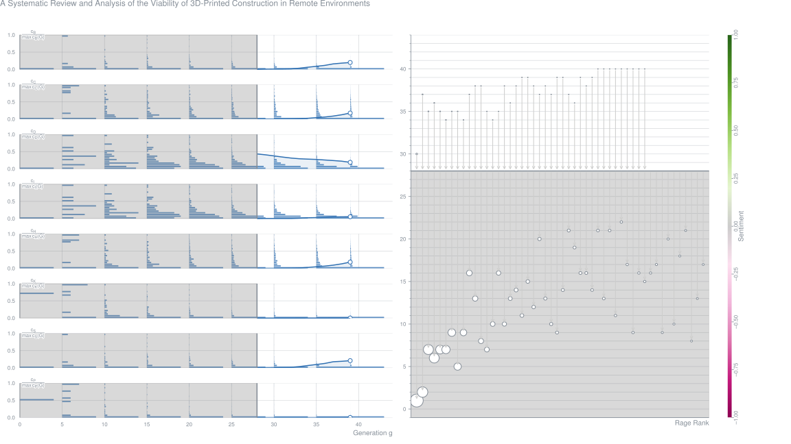
Experimental and Numerical Analysis of 3D Printed Cement Mortar Specimens Using Inkjet 3DP (2021-03)
AbstractInvestigations involving the experimental and numerical analysis of inkjet (powder-based) 3DP are relatively limited for cement mortar materials. This study, by using cement mortar specimens, aimed to determine the optimum strength of 3D printed structural members in all three planes by identifying the compressive strength of cubes, the modulus of elasticity and Poisson’s ratio. In addition, this study aimed to analyse and verify the numerical model for 3D printed cementitious mortar (CP) prisms and beams using an inkjet 3D printer by considering the mechanical behaviour of the printed prisms under compression. Robust and optimal mechanical properties of the 3D printed cementitious mortar obtained from laboratory testing were utilised in the simulation of structural components using ABAQUS software. As inputs for simulation, the strength properties of the printed objects in all three cartesian planes were obtained from test results. The obtained results showed that the printed cementitious materials have orthotropic properties and that the results of experiments were consistent with the analytical solutions and hypothesised model for the different geometric shapes. This finding is extremely valuable in determining the optimum features of 3D printed structures.Metrics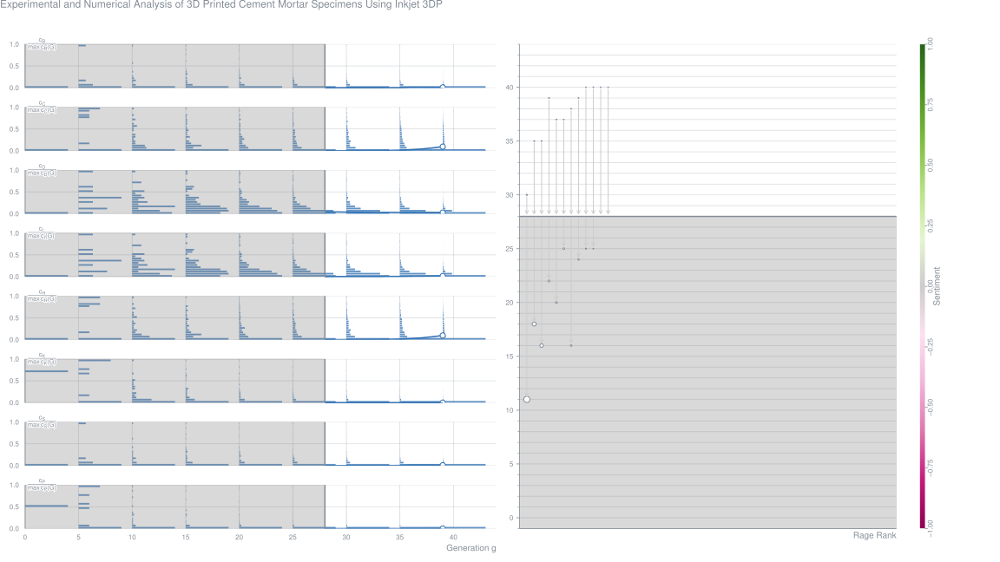
Experimental Study on the Thermal Performance of a 3D Printed Concrete Prototype Building (2021-03)
Abstract3D printed concrete (3DPC) has drawn continuous research attention due to its potential to boost the development of construction industry. In this paper, an on-site experiment has been conducted to investigate the thermal performance of a real 3D printed concrete building. Its potential defects are detected with the infrared thermography technique. Thermal properties of the main wall body of the tested house are calculated with on-site monitoring data. The results identify a highly non-uniform temperature distribution on the exterior wall surface of the 3DPC tested house, which is mainly caused by variations of printing path and cross-section design. Other 3D printing characteristics, such as number of layers per printing, rest time during printing process and lay-by-layer appearance, can also bring side-effect to the thermal performance of 3DPC and generate thermal defects. The calculated average values of thermal resistance (R-value), effective thermal conductivity and thermal transmittance (U-value) are respectively thermal insulating performance of the 3DPC envelops as well as the complexity to depict its heat transfer 0.31 m2K/W, 0.64 W/(mK) and 2.27 W/(m2K). The results demonstrate insufficient and unsatisfied process. Based on the research findings, further detailed studies of 3DPC in thermal aspect are strongly recommended.Metrics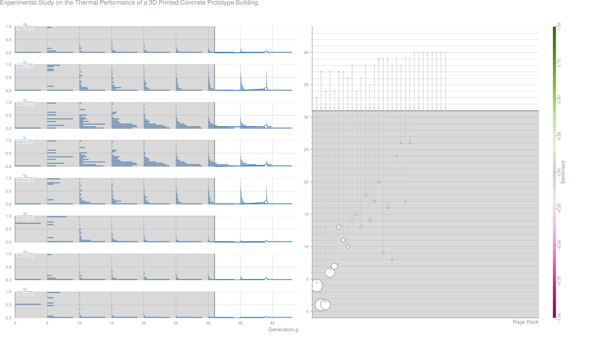
Development of 3D Printing Sustainable Mortars Based on a Bibliometric Analysis (2021-03)
AbstractIn construction, three-dimensional concrete printing technology is an innovative method that opens new design possibilities, reducing the construction time process. The incremental material deposition allows organic shapes without formwork, a mandatory constraint in preparatory phases of conventional complex concrete structures. Nowadays, in three-dimensional printing for construction industry, concrete is the most used material due to its workability, extrudability, and pumpability properties favorable for the printing conditions. Hence, this composition still has a poor sustainable efficiency due to the high levels of Portland Cement. In this research, a reduction of this material was studied and experimented searching for a mortar composition with better ecological footprint, with the objective of decreasing the CO2 emissions. A bibliometric analysis was made to study the constituents of a mortar for three-dimensional printing and respective dosage. The knowledge acquired in the analysis of the compositions contributed to the development of mortars with lower Portland Cement content. A mechanical extruder was used to check the extrusion capacity of the developed mortars, and the best compositions are presented.Metrics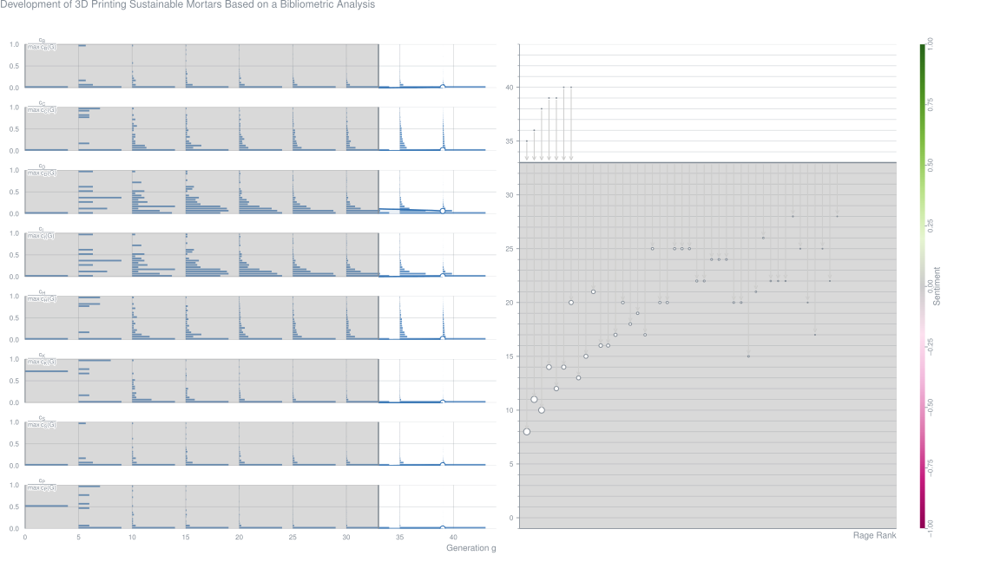
A New Way to Design Software for Industrial Automation: 3D Printer Cement Mixtures (2021-03)
AbstractThis paper presents a new way of developing machine software for the automation industry. This example focuses on a 3D printer intended for printing cement mixtures. The mechanical and electrical construction is shown for clarification. New mappTechnology by a company called B&R is explained, highlighting its benefits t for software developers. Both the advantages and disadvantages are discussed at the end.Metrics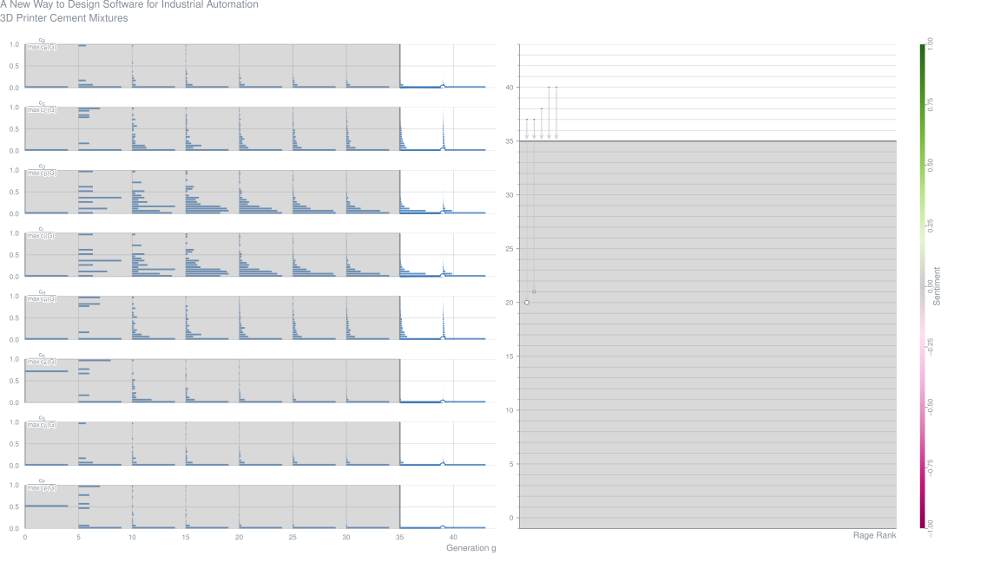
Influence of the Printing-Direction and Age on the Mechanical Properties of 3D Printed Concrete (2021-03)
Behzad Zahabizadeh,
João Pereira,
Claúdia Gonçalves,
Eduardo Pereira,
Vítor Cunha Journal Article – Materials and Structures, Vol. 54, No. 2
Abstract3D concrete printing (3DCP) technology through wet extrusion was developed as one of the digitized approaches with the aim of enhancing the conventional construction methods. Investigation of mechanical/structural behaviour of printed elements is one of the critical aspects regarding the use of 3DCP. A comprehensive experimental programme was performed to evaluate the behaviour under compressive and flexural loading, at distinct ages and under different loading orientations regarding the printing direction, as well as the quality of printed specimens in addition to the degree of their anisotropic/orthotropic. During the compressive tests, a digital image correlation analysis was also performed to assess the crack initiation and propagation within concrete printed specimens. The results unveiled an adequate quality of the printed specimens based on the mechanical tests performed, which was also corroborated by some physical properties, namely through the specific weight and porosity, in which the differences between the printed and mould cast series were marginal.Metrics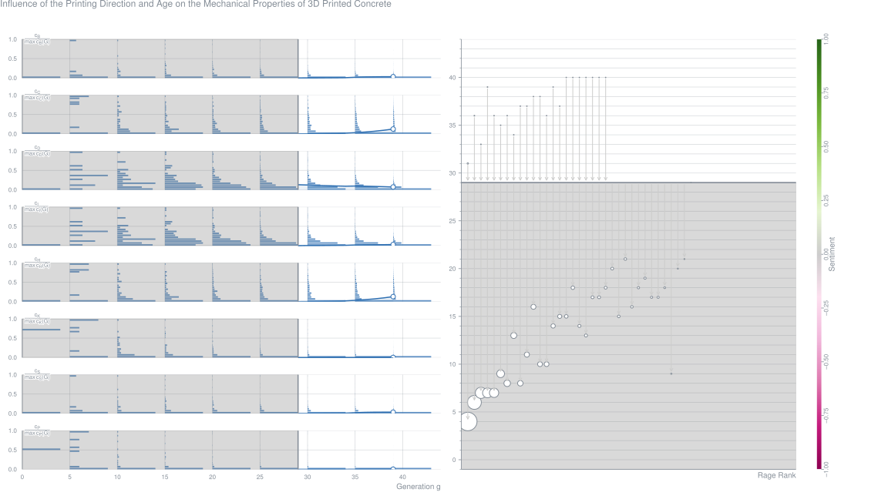
Mix-Design and Rheological Properties of Magnesium-Potassium-Phosphate Cement Composites Based on the 3D Printing-Extrusion-System (2021-03)
Zhihui Zhao,
Mingxu Chen,
Jiabin Xu,
Laibo Li,
Yongbo Huang,
Lei Yang,
Piqi Zhao,
Lingchao Lu Journal Article – Construction and Building Materials, Vol. 284
AbstractThe magnesium potassium phosphate cement composites (MPCCs) with rapid setting, high early strength and low shrinkage performances show considerable potential for 3D printing. In this study, the synergistic effects of magnesium to phosphate (M/P) mass ratio, borax content and fly ash content on the the initial setting time and rheological properties of 3D printed MPCCs (3DP-MPCCs) were investigated using response surface methodology (RSM). The dynamic yielding behaviours are obtained based on Herschel-Bulkley model. The effects of mix design on deformation rate and compressive strength of 3DP-MPCCs were discussed. The results showed that the initial setting time of3DP-MPCCs was prolonged to 30 min to 90 min by optimizing the mix design and decreased with the increase of M/P mass ratio. The incorporation of borax significantly reduced the consistency factor, which was beneficial to the extrudability of 3DP-MPCCs. High M/P mass ratio was the critical factor for the better buildability of 3DP-MPCCs, which can be further improved by increasing the FA content. Finally, the 3DP-MPCCs with M/P mass ratio of 3.0, 40% borax and 25% FA was determined as the optimal mix design, showing the minimum deformation rate of 0.28% and highest compressive strength of 32.59 MPa, respectively.Metrics